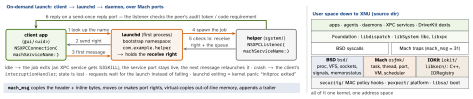

macos · folio
In one line: XNU is a hybrid kernel: CMU’s Mach (tasks, threads, ports, VM, scheduler), BSD code from FreeBSD (processes, POSIX, VFS, sockets, signals) and IOKit (C++ drivers) in one address space. The kernel starts launchd as the first process; launchd owns every service name, holds its port, and starts the job when the first message arrives. XPC is launchd-managed IPC on top — how an app splits into small, separately sandboxed, crash-isolated helpers.
Download PDF Print view LaTeX source


Mach vs BSD — one process, two views
Mach (osfmk/) | BSD (bsd/) | |
|---|---|---|
| unit | task: VM map + port space | proc: pid, credentials, fds — 1:1 with its task |
| runs | thread | a pthread is a Mach thread |
| talks | ports + mach_msg | pipes, sockets, signals |
| names | port name, local to one task | pid — reused; audit token adds a version |
| faults | exception → thread, then task, then host exception port | signal: BAD_ACCESS → SEGV (bad address) or BUS · BAD_INSTRUCTION → ILL · ARITHMETIC → FPE · BREAKPOINT → TRAP |
Ports, rights, messages
A port is a kernel message queue; tasks hold rights to it under task-local names: receive (one holder, who dequeues) · send (many) · send-once (one message — replies) · port set (wait on many, like select) · dead name.
- Task ports, capability strictly decreasing: control → read → inspect → name; also bootstrap (launchd), host, exception. Control ports are pinned.
task_for_pid: debugger entitlement (admin dialog, 10-hour session) + a target withget-task-allow; SIP-protected processes refuse. - Hardened (platform binaries): service ports’ receive right is immovable; a reply port’s send-once right lets exactly one reply back, from that peer. Breach = guard exception.
- MIG generates RPC stubs; XNU’s docs discourage new raw Mach code — use XPC.
IOKit, kexts, DriverKit
Devices and drivers sit in the IORegistry (ioreg). “Kexts are no longer recommended”: since macOS 11 third-party kexts load only at boot, from an Auxiliary Kernel
Collection — on Apple silicon only in Reduced Security (1TR + admin password). DriverKit (macOS 10.15; M-series iPads, iPadOS 16): .dext drivers in user space, shipped inside an app — on the Mac installed as system extensions.
Memory pressure — macOS vs iOS
- normal · warning · critical reach code via
DispatchSource.makeMemoryPressureSource: relax caching / drop all caches.PROC_LIMIT_WARNfires at 80 % of a process’s limit. - Idle exit takes only opted-in (
EnablePressuredExit), idle (no open transaction) daemons. Compressor full: kill the largest process if it holds > ½ of compressed pages, else apcontrolaction (kill, suspend, throttle); then “Out of Application Memory”. - Past a hard footprint limit: killed at once; past a soft one: a simulated crash.
- Jetsam is the same subsystem everywhere: 210 priority levels, every process but launchd has one (0 idle · 100 foreground); RunningBoard moves apps between bands; most kills climb from the bottom. iOS swap is the freezer (suspended apps’ dirty memory to flash, band 75), plus app swap on M1-and-later iPads.
Traps
- “XNU is a microkernel” — Mach, BSD and IOKit run in one kernel address space.
- Daemonizing (
daemon(3), fork + parent exits): launchd sees the job die. KeepAlive true+ a crashing binary = a respawn every 10 s.setuid()in a root daemon is not “being the user”: bootstrap subset and audit session stay — use an agent.
launchd — first process (OS X 10.4)
The kernel execs /sbin/launchd. Daemon: one instance for all clients, system/, root, no UI. Agent: one per logged-in user, gui/<uid> (= login/<asid>), may show UI. pid/<pid> = the XPC services that process sees. <Label>.plist lives in ~/Library/LaunchAgents · /Library/LaunchAgents|Daemons (admin) · /System/Library/… (Apple).
Label | required; the unique job name |
ProgramArguments | argv for execvp — no shell |
BundleProgram | path inside the app bundle (SMAppService only) |
RunAtLoad | start once when loaded |
KeepAlive | true, or SuccessfulExit · Crashed · PathState… ORed |
MachServices | bootstrap names; the job must check in |
Sockets | launchd listens; launch_activate_socket hands over fds |
StartInterval | every N s — a firing during sleep is missed |
StartCalendarInterval | cron-like — missed in sleep → once at wake |
ThrottleInterval | spawn at most every N s (default 10) |
ProcessType | Background · Standard · Adaptive · Interactive |
EnablePressuredExit | reclaimable when idle under pressure; ignored with KeepAlive true |
Stop: SIGTERM, SIGKILL after ExitTimeOut — at once if no transaction is open (a message expecting a reply holds one). macOS 27: launchd refuses quarantined plists.
XPC — three kinds of service
| launch agent | launch daemon | XPC service (bundled) | |
|---|---|---|---|
| instances | 1 per logged-in user | 1 system-wide | 1 per client, dies with it |
| runs as | that user | root | the app’s user; sandboxed by default; never root |
| lives in | LaunchAgents plist | LaunchDaemons plist | Contents/XPCServices/X.xpc |
| reach | machServiceName: | + .privileged | serviceName: — that app only |
- A daemon cannot open a connection to a user process — it only answers. launchd SIGKILLs an idle XPC service: keep it stateless.
- APIs: C
libxpc(10.7) ·NSXPCConnection(10.8):@objcprotocol,voidmethods, one reply block,NSSecureCodingarguments · SwiftXPCSession/XPCListener(macOS 14):Codable. The wire encoding is no ABI — never persist it. - Interruption: the peer exited or crashed — the connection still works, the next message relaunches it, state is gone. Invalidation: never connected, or invalidated — always the last handler; build a new connection.
- Check the peer, not its pid — pids are reused and pid-then-lookup races; the audit token carries the pid version. Code requirement: C API (macOS 12),
setCodeSigningRequirement(13), lightweight requirement (14.4),XPCPeerRequirement.isFromSameTeam()·.hasEntitlement(_:)(26).
struct Job: Codable { let png: Data; let px: Int }
struct Thumb: Codable { let data: Data }
// bundled service, main.swift
let l = try XPCListener(service: "com.example.app.Resizer") { req in
req.accept { (job: Job) in Thumb(data: render(job)) } }
dispatchMain()
// app: the first message launches the service
let s = try XPCSession(xpcService: "com.example.app.Resizer")
let t: Thumb = try s.sendSync(Job(png: png, px: 512))SMAppService — shipping a helper
macOS 13+; replaces SMJobBless (deprecated in 13) and SMLoginItemSetEnabled. The plist stays in the bundle — Contents/Library/LaunchDaemons/ (or LaunchAgents) with BundleProgram — and SMAppService.daemon(plistName: "com.example.helper.plist").register(). status: notRegistered · enabled · requiresApproval · notFound. A daemon needs the user’s authentication; approving it approves the bundle’s other helpers. One switch per app in Login Items; a plist outside the bundle joins its app’s switch with AssociatedBundleIdentifiers; sfltool dumpbtm lists them all. macOS 26+: tasks still running after the app quits trigger an allow / don’t-allow prompt.